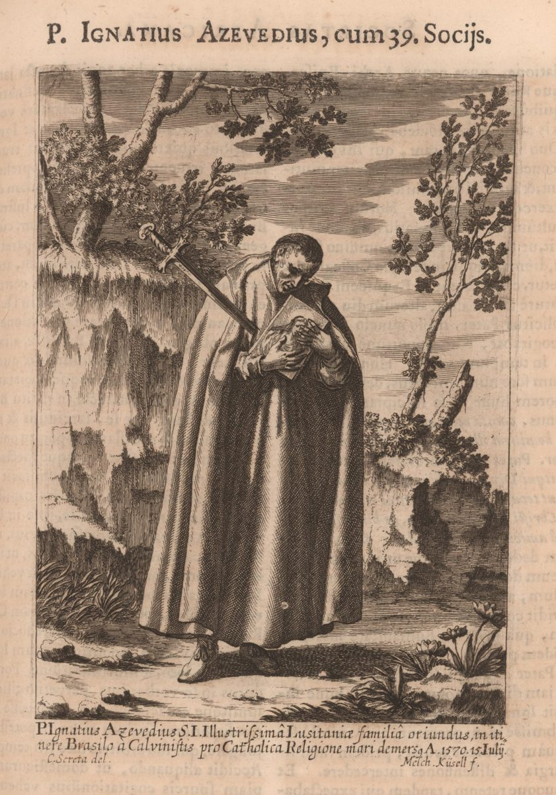

Isusovački blaženici
Svećenik
Bl. Ignacije de Azevedo
1526. – 1570.
Portugalski isusovac obilazio je brazilske misije i okupljao nove misionare, a pri povratku u Brazil ubijen je s velikom skupinom svojih suputnika.
Tekst je preveden i prilagođen uz pomoć umjetne inteligencije.

Izvor slike
- Spomendan
- 19. siječnja
- Zaštitništvo
- Nije navedeno u izvoru
- Životni vijek
- 1526. – 1570.
- Djelovanje
- Misije i evangelizacija · Mučeništvo
- Razdoblje
- 16. stoljeće
- Misijska služba
- Vizitator i provincijal za Brazil
- Rođenje — dostupni podaci
- 1526.; dan i mjesec nisu potvrđeni u provjerenom izvoru.
- Mjesto rođenja
- Porto, Portugal
- Datum smrti
- 15.07.1570.
- Mjesto smrti/mučeništva
- Atlantski ocean kod La Palme, Kanarski otoci, Španjolska
- Okolnosti smrti/mučeništva
- Ubijen mačem i proboden pri napadu na brod Santiago; tijelo bačeno u more.
- Uloga
- Svećenik
- Mučenik
- Da
- Ostale oznake
- Vođa skupine četrdesetorice brazilskih mučenika; vizitator brazilske misije
- Pripadnost
- Isusovac
- Drugi oblici imena
- Ignatius de Azevedo · Ignatius
Životopis
Ignacije de Azevedo potjecao je iz bogate plemićke obitelji u Portu. Kao mladić upravljao je obiteljskom imovinom, ali ga je povlačenje na duhovne vježbe u Coimbri usmjerilo prema redovništvu. U Družbu Isusovu stupio je 1548. Provincijal Simão Rodrigues morao je umjeravati njegovu strogost prema sebi. Još prije dovršetka teologije povjereno mu je vodstvo kolegija svetoga Antuna u Lisabonu; kasnije je pomagao crkvenoj obnovi u Bragi i postao viceprovincijal.
General Franjo Borgija poslao ga je u vizitaciju brazilskih misija. Od dolaska u Bahiju 1566. obilazio je škole i postaje, uočavajući velike mogućnosti, ali i manjak ljudi. Kao novoimenovani provincijal vratio se u Europu i okupio oko sedamdeset dobrovoljaca iz Portugala i Španjolske, osobito mladih skolastika i novaka. Petomjesečna zajednička priprava trebala ih je osposobiti za složeno misijsko poslanje.
Iz Lisabona su isplovili 5. lipnja 1570. Dio skupine ostao je na drugim brodovima, dok je Azevedo sa suputnicima na Santiagu preko Madeire krenuo prema La Palmi. Upozorenja na gusare navela su četvoricu da odustanu. Nakon pristajanja u Tazacorteu nastavili su plovidbu prema Santa Cruzu, ali brži brodovi francuskoga hugenotskog zapovjednika Jacquesa Sourieja presreli su ih.
Azevedo je uz sliku Majke Božje, dar Pija V., hrabrio putnike na molitvu. Napadači su ga sasjekli i bacili u more te ubijali njegove redovničke drugove. Šimun da Costa stradao je sljedećega dana kada je otkrio da pripada misiji. Kuhar Ivan Sánchez ostao je živ jer je gusarima bio potreban; nakon bijega iz La Rochellea prenio je svjedočanstvo u Portugal. Štovanje četrdesetorice mučenika potvrdio je Pio IX. 1854.
Život i nasljeđe
Azevedova priprava uključivala je vrlo određen raspored skupine. Franco opisuje izmjene molitve, pouke, učenja i praktičnih poslova te potrebu da se pomoćnici međusobno zamjenjuju. Za buduće učitelje čuvalo se vrijeme studija, a za misijske kuće pripremali su se prijepisi teoloških i moralnih tekstova. Narudžbe drva, izrada oltarnih predložaka i opremanje škrinja pokazuju njegovu organizacijsku odgovornost. Čak je i izradu madraca pretvarao u priliku da drugi nauče posao koji nitko u skupini još nije dobro poznavao.
Tekst je preveden i prilagođen uz pomoć umjetne inteligencije.
Pročitaj više na izvornoj stranici ↗